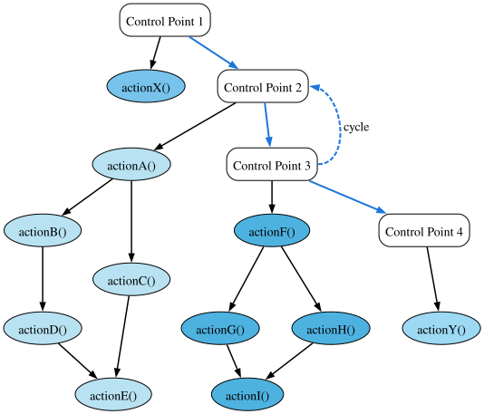
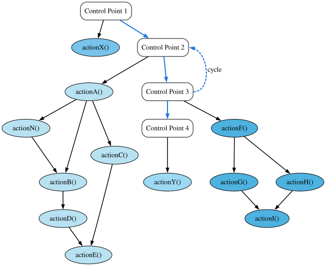

Control Model
The FleCSI control model allows users to define the high-level structure of an application using a control-flow graph (CFG) of control points, under each of which a directed acyclic graph (DAG) of actions can be defined. Actions in turn launch tasks to operate on distributed data.
For FleCSI developers, the control model replaces the normal hard-coded execution structure of an application, instead providing a well-defined, extensible mechanism which can easily be verified and visualized.
Consider the following example of a traditional implicit control model:
int main(int argc, char ** argv) {
int step{0}, steps{0};
// initialization stage
initialize(steps);
while(step<steps) {
// simulation stages
advanceA();
advanceB();
advanceC();
// analysis stages
analyzeA();
analyzeB();
analyzeC();
} // while
// finalization stage
finalize();
} // main
While this example is straightforward, it is also restrictive because it defines a single point in the application where all stages must be known. Suppose that an advanced user would like to add an advance or analysis stage to the simulation, e.g, to test a new algorithm or to customize their metrics? With the traditional model above, she would need to have access to the code base and would have to rewrite the main simulation loop with the new execution logic. This is error-prone, and worse it necessarily forces the code to diverge (unless every alteration to the application is vetted and merged).
FleCSI’s control model offers a much cleaner solution, which is both easier for the user and safer for the core application developers.
Control-Flow Graphs & Directed Acyclic Graphs
Fig. 12 shows a complete representation of a FleCSI control model.
This figure was actually generated by a FleCSI example application using
the control::write_graph function, which outputs a Dot file of the control
model.
The white control-point nodes in the figure (labeled Control Point X)
define a control-flow graph. Notice that the control points do not form
a DAG, i.e., they cycle (indicated by the dashed line from Control
Point 3 to Control Point 2).
This is true in general and allows users to create complex looping
structures within their applications.
At each control point in the CFG, there are one or more actions defined: e.g., under Control Point 2 are the actions A through E. The actions are where the actual work of the simulation is executed.
Important
The actions in a FleCSI control model are not tasks! The control model capability in FleCSI is orthogonal to Legion’s tasking model; i.e., they are complementary. FleCSI actions are functions that execute tasks! When the Legion backend to FleCSI is in use, the control model exposes a sequential program order to the Legion runtime that can be analyzed for data dependencies to increase concurrency and allow load balancing during execution.
{kind=link}

Fig. 12 Example FleCSI Control Model.
It is important to notice that actions have dependencies and that they
are DAGs.
This allows the FleCSI runtime to topologically sort the actions into a
single valid sequential ordering.
This ordering uses the fact that the control point order is defined by a
specialization of the core FleCSI control type.
FleCSI then sorts each DAG of actions to create the overall sequential
ordering (Fig. 13).
This ordering is non-unique but is deterministic for a given FleCSI
control model; i.e., the same code and compiler version will generate
the same ordering every time.
Fig. 13 was also generated by a FleCSI example program by
calling the control::write_actions function.
FleCSIbility
Another important attribute of the FleCSI control model is that actions and dependencies do not need to be defined in a centralized location in the code. This adds significant flexibility in extending the actions that a simulation executes.
Let’s consider our advanced user who would like to add a new action: Because FleCSI does not force her to add actions to a static loop, she can instead put it in a source file that only needs to link to the control points definition of the application. She still has to build an application driver. However, if the application packages are primarily developed as libraries, this is easy to do.
Inserting a new action N under Control Point 2 looks something like this:
control::action<actionN, cp::two> action_n;
const auto dep_na = action_n.add(action_a);
const auto dep_bn = action_b.add(action_n);
That’s it! This will insert a new action that depends on action A and which is depended upon by action B (Fig. 14). Because of FleCSI’s data model, any data dependencies will automatically be honored by the runtime. For example, if action N modifies a pressure field that is used by action B, the underlying runtime will recognize this dependency and the data will be consistent. This code can also be in its own source file, which means that the original package does not need to be modified. Of course, the core application developers need to document the control point identifiers and actions so that our advanced user knows the correct names to use. However, this is a small cost to allow easy experimentation and extension of the application.

Fig. 14 Control Model After Extension.